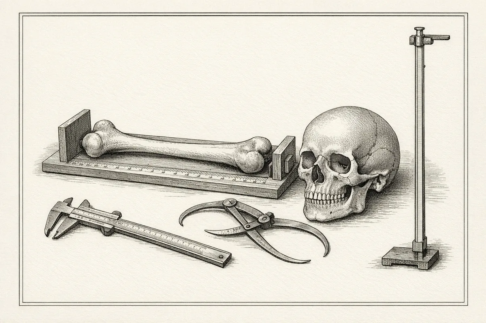

Кто из предков ваш двойник?
Введите рост и вес. Мы поставим вас в один ряд с Люси, неандертальцем и хоббитом в настоящем масштабе и найдём среди 311 ископаемых людей того, кто сложён как вы.
Вы рядом с предками
Это иллюстрация метода, а не медицинские данные.подробнее
Ваши кости оценены обращением формул, выведенных для другой задачи: длина бедра через постоянное отношение к росту (Feldesman et al. 1990), диаметр головки бедра обращением уравнений массы (среднее Ruff 1991, McHenry 1992, Grine 1995), а обращённая регрессия даёт смещённую оценку. Оценки находок взяты из базы Will et al. 2017 и сами имеют интервалы ±10-20%; типичные объёмы мозга таксонов даны как ориентир. Ничего не отправляется на сервер, пока вы сами не нажмёте «Поделиться ссылкой».
Вы на шкале 4 млн лет
Каждая точка: опубликованная оценка для конкретной находки из базы Will, Pablos, Stock 2017. Полоса: ваши рост или масса, а если заполнен калькулятор по костям, его результат с интервалом. Наведите на точку, чтобы увидеть образец, метод и источник.
Калькулятор по костям, база находок и методика
Ниже научная часть: оценки роста, массы тела и мозга по обмерам костей с источником и интервалом у каждой формулы, открытая база 311 находок и описание метода.
Черновик для научной проверки.подробнее
Коэффициенты сверены по вторичным источникам (у каждой формулы указано, где) и ждут сверки с оригинальными статьями. Все формулы построены на современных людях: для ископаемых видов реальная неопределённость выше показанных интервалов.

Обмерьте кость, получите тело
Нажмите на кость на схеме или заполните поле. Можно ввести один обмер, можно все: калькулятор применит каждую подходящую формулу и покажет, насколько они согласуются.
Выкости рассчитаем по модели
Открытые данные
Will M., Pablos A., Stock J.T. (2017), Royal Society Open Science, дополнительные материалы под лицензией CC BY. Интервалы с пометкой «b» в оригинале посчитаны как ±20% (масса) и ±10% (рост). Нажмите на строку, чтобы найти находку на шкале.
Откуда цифры
Калькулятор ничего не придумывает: только опубликованные уравнения, ссылки на первоисточники с DOI и явная пометка, где коэффициенты сверены.
Как считаются интервалы
Если источник даёт стандартную ошибку оценки (SEE), интервал равен ±1.96·SEE: это приближённый 95% интервал предсказания (так у Trotter и Gleser).
Если не даёт, применяется конвенция ±20% для массы тела (Ruff 2010) и ±10% для роста, как в базе Will et al. 2017. Это ориентир, а не статистически выведенный интервал.
Независимая проверка на 253 британцах с известной массой (Elliott et al. 2015) показала среднюю абсолютную ошибку уравнений по головке бедра 17-20%, то есть ±20% честно отражает порядок ошибки даже для современных людей.
Какие формулы выбирать для ископаемых
McHenry 1992 построена на небольших людях (включая койсан и пигмеев) и подходит для мелких гоминид вроде австралопитеков. Grine et al. 1995 подходит для крупных поздних Homo. Для средних размеров Auerbach и Ruff (2004) советуют среднее трёх уравнений: Ruff 1991, McHenry 1992 и Grine 1995.
Отношение бедро/рост (Feldesman et al. 1990) не зависит от пола и популяции и стандартно применяется к ископаемым. Уравнения Trotter и Gleser выведены на американцах середины XX века и годятся как ориентир для поздних Homo.
Открытые вопросы для научной сверки
Поправка ×0.90 к уравнениям Ruff 1991 (избыток жира в референсной выборке США) встречается в части литературы и в прототипе не применена.
Многомерные уравнения Grabowski et al. 2015 (основа оценки Люси в базе) пока не включены: нужны коэффициенты из оригинала.
Длина большеберцовой у Trotter измерялась без медиальной лодыжки (Jantz et al. 1995).
Реестр всех формул
Открытый код, открытые данные
Формулы оценки размеров тела ископаемых гоминид разбросаны по десяткам статей, а у студента, преподавателя или журналиста нет одного места, где можно ввести обмер и получить оценку с источником. Палеокалькулятор собирает их в один прозрачный инструмент.
Проект некоммерческий. Код под лицензией MIT, данные с указанием авторства. Ищем научного руководителя-антрополога, который определит, какие формулы уместны для каких таксонов.
- Калькулятор по формуламРост, масса, мозг; источники и интервалы; база Will et al. 2017.
- Сверка и расширениеСверка с оригиналами, Grabowski 2015, формулы по стопе и другим элементам.
- Открытая база обмеровСырые обмеры находок с привязкой к первоисточникам, CC BY.
- 3D-достраивание фрагментовИсследовательский модуль с оценкой неопределённости.